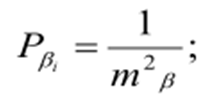

9-амалий иш Мавзу: Чизиқли-бурчак тармоқларни тадбиқ этиш
Геодезик ишлар амалиётида оптик ва электрон дальномер ҳамда бошқа
ҳозирги замон асбобларининг тадбиқ этилиши тез ва юқори аниқликда масофа ўлчаш имконини
яратади, бу эса чизиқли-бурчак тармоқларини кенг қўллашга имкон беради. Чизиқли-бурчак
тармоқларини бошқа геодезик тармоқлар билан солиштириш натижасида чизиқ ва бурчак ўлчашларни
бирга олиб борилиши бу тармоқларни анча мустаҳкам бўлишини кўрсатади. Жудаям юқори аниқликни
таъминлаш учун тармоқнинг ҳамма бурчак ва томонлари ўлчаниши керак.
Чизиқли-бурчак тармоқлари аниқлигини ҳисоблашда иккита ҳолатни
ажратиш мақсадга мувофиқ:
а) тармоқдаги аниқланадиган элемент фақат ўлчанган бурчаклар ёки фақат ўлчанган
томонлар узунлиги орқали ҳисобланиши мумкин;
б) тармоқдаги керакли элементлар, бурчак ва чизиқли ўлчашларга
асосланган ҳолда аниқланиши мумкин.
Биринчи ҳолатда чизиқли-бурчак тармоқларини аниқлигини ҳисоблаш
анча соддалашади.
Иккинчи ҳолатда аниқлик дастлабки ҳисоби тенглаштирилган
қийматларни аниқлаш ўрта квадратик хатолиги ифодаси орқали амалга
оширилади.
Чизиқли-бурчак тармоқлар тузиш усулларидан биттаси, диагоналсиз тўртбурчак ҳисобланади.
Бу усулнинг моҳияти шундан иборатки, агарда АВСД тўртбурчакда (1-расм) барча бурчаклар
ва иккита а ва в томонлар ўлчанган бўлса, қолган томонлар қуйидаги ифодалар ёрдамида
ҳисобланиши мумкин.
1-расм. Диагоналсиз тўртбурчак схемаси.
с ва а томонларни аниқлаш учун АД ва АВ томонларига параллел бўлган BE ва EF томонларни
ўтказамиз.
C = ДЕ + ЕС
бўлади.
У ҳолда Ўз ўрнида
Бундан,
Томон d қуйидагича аниқланади:
d = AF + FД, Бу ерда,
Тўртбурчак бурчакларини ўлчаш хатолигини тенг аниқликда деб қабул қилсак
с ва d томонлар ўрта квадратик хатолиги
Биринчи томони ҳамда ён томонлари ўлчанган тўртбурчаклар занжирининг (31.2-расм) охирги
Сn
томонини аниқлаш хатолиги
куйидагига тенг
бу ерда S-ўлчанган ён томонлар узунлиги.
2-расм. Тўртбурчаклар занжири схемаси.
Квадратга яқин бўлган тўртбурчаклар учун
бу ерда n-қатордаги квадратлар сони, ёки
Оралиқ томонлар хатолиги эса қуйидагича ҳисобланади:
бу ерда п, вa n, – бошланғич томондан аниқланаётган томонгача бўлган тўртбурчаклар сони.
Ўртадаги томон учун n1=n2=n1-2 деб ҳисобланса,
Геодезик дигоналсиз тўртбурчаклар аҳоли яшаш жойлари ва ўрмон ҳудудларида геодезик асос
барпо этишда кенг кўламда қўлланилиши мумкин.
Учбурчакдаги ўлчанган бурчаклар ва томонларга асосан тенглаштирилган бурчаклар
аниқлигини баҳолашни кўриб чиқамиз (3-расм).
3-расм. Тенглаштирилган бурчаклар аниқлигини баҳолашга оид.
Ўлчанган бурчак вазни қуйидагига тенг десак,

Томон учун эса,
А бурчак ўрта квадратик хатолиги:
Агарда
бўлса,
бўлади.